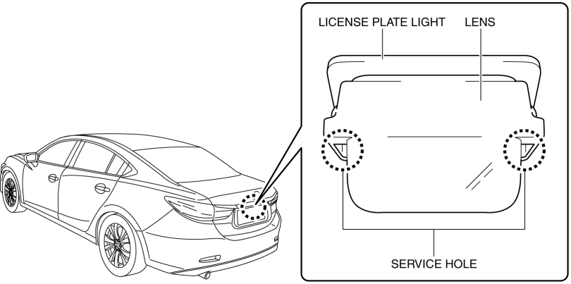
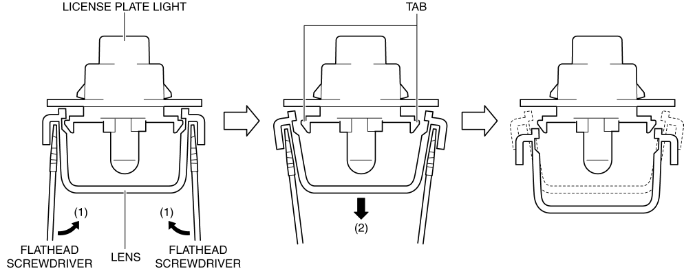
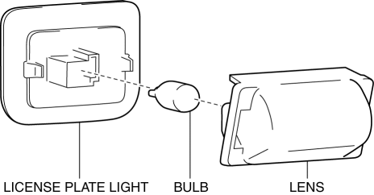

< Previous
Next >
2014 -
Mazda6 -
Body and Accessories
LICENSE PLATE LIGHT BULB REMOVAL/INSTALLATION
1. Disconnect the negative battery cable. (See NEGATIVE BATTERY CABLE DISCONNECTION/CONNECTION [SKYACTIV-G 2.5].)
2. Insert a tape-wrapped flathead screwdriver into the service hole in the position shown in the figure.

3. Move the flathead screwdriver in the direction of the arrows (1) shown in the figure, and pull the lens in the direction of the arrow (2) shown in the figure to detach the license plate light tabs from the lens.

4. Remove the lens.

5. Remove the license plate light bulb.
6. Install in the reverse order of removal.
< Previous
Next >
© 2012 Mazda North American Operations, U.S.A.